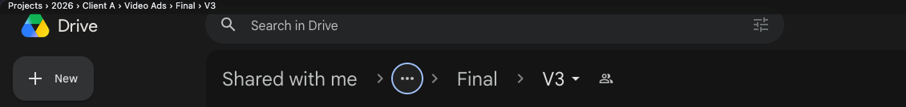

Drive Full Path
Google Drive hides the middle of a deep folder's path behind three dots. Drive Full Path writes the whole path in a thin bar at the top of the window, so you always know where you are.

Top line: Drive Full Path. Below it: what Drive shows on its own.
Every folder, every time
Open a folder and its full path is there within a second, from the first folder you can see to the one you are in.
Small and out of the way
One line of small letters at the very top. Drive works exactly as before underneath.
Click to travel
Every folder name in the bar is a link. One click takes you there, even to the folders Drive hides behind "…". ⌘ or middle click opens a new tab.
Copy with one click
The small ⧉ at the right end copies the whole path, ready to paste into a message or a note.
Nothing leaves your browser
No account, no tracking, no network requests. It reads the path from the page you already have open.
How it works
- Install it from Firefox Add-ons.
- Open any folder in
drive.google.com. - The bar appears at the top with the whole path. Move to another folder and it follows.
- Click any name in the bar to go up to that folder.